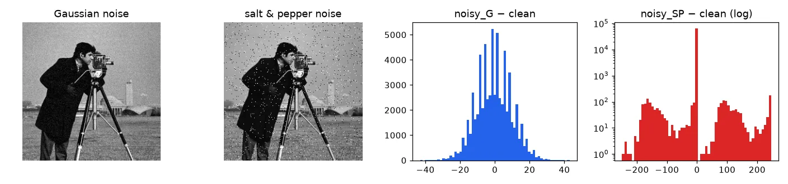
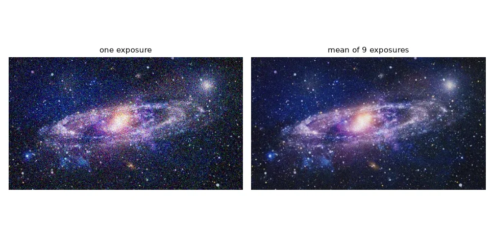
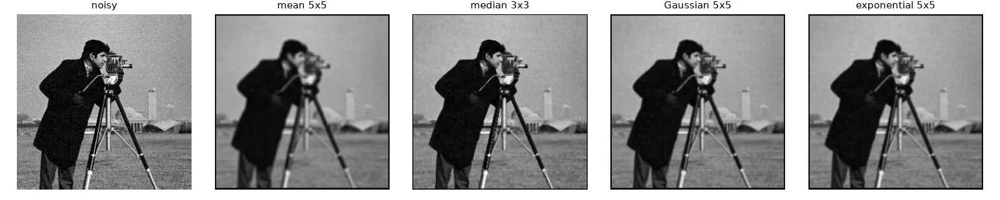
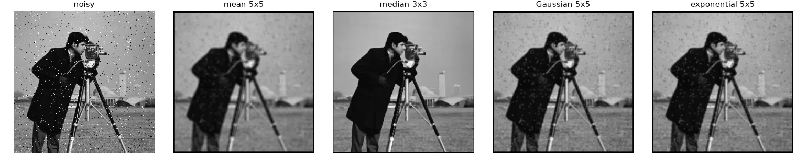
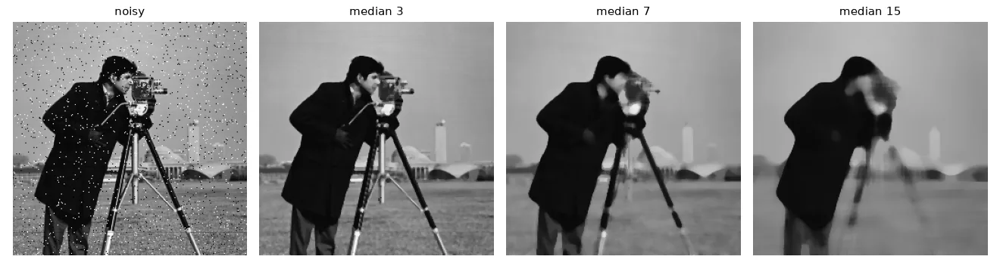
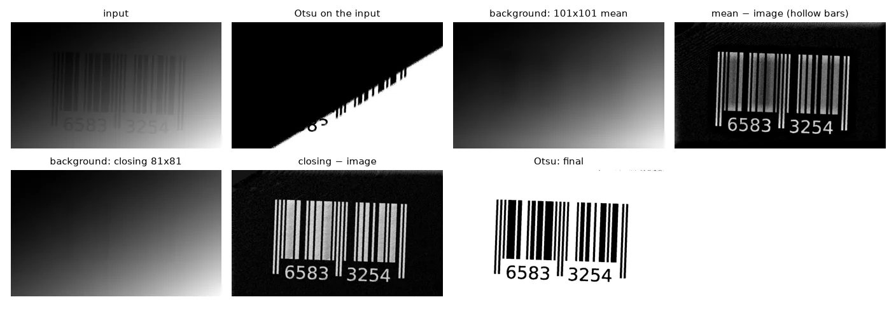

Know your noise#
Two noise models cover most cases:
- Gaussian noise: every pixel gets a small random offset \(n \sim \mathcal{N}(0, \sigma^2)\). Typical of sensor electronics in low light.
- Salt-and-pepper (impulse) noise: a fraction \(p\) of the pixels is replaced by 0 or 255. Typical of transmission errors and dead pixels.
def add_gaussian_noise(img, sigma):
noise = np.random.normal(0, sigma, img.shape)
return np.clip(img + noise, 0, 255).astype(np.uint8)
def add_salt_pepper(img, p):
"""Each pixel is hit with probability p; half of the hits are black, half white."""
out = img.copy()
r = np.random.random(img.shape)
out[r < p / 2] = 0
out[(r >= p / 2) & (r < p)] = 255
return out
def psnr(ref, img):
"""Peak signal-to-noise ratio in dB (higher is better)."""
mse = np.mean((ref.astype(np.float64) - img) ** 2)
return 10 * np.log10(255 ** 2 / mse)
To find out which noise an image has, subtract the clean version — in a signed type, otherwise negative differences wrap around (lesson 01):
diff_g = noisy_g.astype(np.int16) - clean # signed! uint8 would wrap around
diff_sp = noisy_sp.astype(np.int16) - clean
print("Gaussian noise: mean %.2f std %.2f" % (diff_g.mean(), diff_g.std()))
print("S&P: %.1f%% of the pixels changed" % (100 * np.mean(diff_sp != 0)))
Gaussian noise: mean -0.45 std 9.87
S&P: 3.0% of the pixels changed

To compare filters with a number instead of by eye, we use the PSNR, \(10 \log_{10}(255^2 / \text{MSE})\) in decibels: higher is closer to the clean image.
The best filter: more measurements#
If you can take several pictures of a static scene, averaging \(n\) of them divides the noise standard deviation by \(\sqrt{n}\) without blurring anything. The running mean \(\mu_k = (1 - \tfrac{1}{k})\,\mu_{k-1} + \tfrac{1}{k}\,x_k\) needs only the current average in memory:
frames = [U.imread(f"frames/galaxia{i}.jpg") for i in range(9)]
mean = np.zeros(frames[0].shape, np.float64)
for i, frame in enumerate(frames):
alpha = 1 / (i + 1) # running (incremental) mean
mean = (1 - alpha) * mean + alpha * frame
stacked = mean.astype(np.uint8)

Mean and median filters#
A mean (box) filter replaces each pixel by the average of its \(n \times n\) neighbourhood. A median filter replaces it by the median: sort the \(n^2\) values and take the middle one.
def mean_filter(img, n):
"""n x n box filter, borders left at zero."""
k = n // 2
out = np.zeros_like(img)
for i in range(k, img.shape[0] - k):
for j in range(k, img.shape[1] - k):
out[i, j] = img[i - k:i + k + 1, j - k:j + k + 1].mean() # note the +1
return out
def median_filter(img, n):
k = n // 2
out = np.zeros_like(img)
for i in range(k, img.shape[0] - k):
for j in range(k, img.shape[1] - k):
out[i, j] = np.median(img[i - k:i + k + 1, j - k:j + k + 1])
return out
Off by one
The window around pixel \(i\) is img[i-k : i+k+1]. In my first version I wrote img[i-k : i+k]: Python slices exclude the end, so the window was \((n-1) \times (n-1)\) and shifted by half a pixel.
The median ignores outliers: a single 255 among eight values near 100 does not move it at all, while the mean is dragged up. That makes it the filter for salt-and-pepper noise.
Convolution: one operation, many filters#
The mean filter is a weighted sum of the neighbours with all weights equal to \(1/n^2\). Allow arbitrary weights — a kernel \(h\) — and you get the 2-D convolution:
(What we implement below, without flipping the kernel, is strictly a correlation; for symmetric kernels the two are identical, and OpenCV's filter2D also computes the correlation.)
def convolve(img, kernel):
"""2-D correlation of img with kernel (equal to convolution for symmetric kernels)."""
kh, kw = kernel.shape[0] // 2, kernel.shape[1] // 2
src = img.astype(np.float32)
out = np.zeros_like(src)
for i in range(kh, img.shape[0] - kh):
for j in range(kw, img.shape[1] - kw):
window = src[i - kh:i + kh + 1, j - kw:j + kw + 1]
out[i, j] = np.sum(window * kernel)
return out
def gaussian_kernel(size, sigma):
ax = np.arange(size) - size // 2
xx, yy = np.meshgrid(ax, ax)
k = np.exp(-(xx ** 2 + yy ** 2) / (2 * sigma ** 2))
return k / k.sum() # weights sum to 1: brightness preserved
box3 = np.ones((3, 3)) / 9
gauss3 = np.array([[1, 2, 1], [2, 4, 2], [1, 2, 1]]) / 16 # sigma ~ 0.8
expo5 = np.array([[1, 1, 3, 1, 1], [1, 3, 7, 3, 1], [3, 7, 16, 7, 3],
[1, 3, 7, 3, 1], [1, 1, 3, 1, 1]]) / 80 # exponential filter
The Gaussian kernel \(h(x, y) \propto e^{-(x^2 + y^2) / 2\sigma^2}\) gives more weight to the centre than a box, so it blurs more gracefully; the 3×3 kernel \(\frac{1}{16}[1, 2, 1; 2, 4, 2; 1, 2, 1]\) is its small integer approximation. The exponential kernel \(h \propto e^{-\gamma(|x| + |y|)}\) is a sharper-peaked alternative. All weights sum to 1 so that a flat region keeps its brightness. The median, by contrast, is not a convolution: it is not a weighted sum.


The numbers tell an important story:
| Filter | PSNR, Gaussian noise | PSNR, salt & pepper |
|---|---|---|
| none (noisy input) | 28.2 dB | 20.3 dB |
| mean 5×5 | 22.9 dB | 22.6 dB |
| median 3×3 | 26.6 dB | 27.0 dB |
| Gaussian 5×5, σ = 1 | 25.9 dB | 24.7 dB |
| exponential 5×5 | 25.9 dB | 24.8 dB |
For salt-and-pepper the median wins by far. For the mild Gaussian noise (\(\sigma \approx 10\)) of this image, every filter lowers the PSNR: the detail destroyed by the blur costs more than the noise removed. Denoising is always a trade-off between noise and detail — the stronger the noise, the more blur is worth paying.

The OpenCV way#
box = cv2.blur(noisy_g, (5, 5))
gauss = cv2.GaussianBlur(noisy_g, (5, 5), sigmaX=1.0)
median = cv2.medianBlur(noisy_sp, 3)
custom = cv2.filter2D(noisy_g, ddepth=-1, kernel=expo5.astype(np.float32)) # any kernel
bilateral = cv2.bilateralFilter(noisy_g, d=7, sigmaColor=40, sigmaSpace=5) # edge-preserving
filter2D matches our convolution up to rounding inside the image, but handles the border differently: we left a black frame of \(k\) pixels, OpenCV reflects the image (BORDER_REFLECT_101) so the output has no frame. And it is roughly 1000× faster (≈ 0.2 ms vs ≈ 170 ms for our loop on a 256×256 image). The bilateral filter is a bonus: a Gaussian whose weights also drop when the neighbour's value is different, so it smooths flat regions while keeping edges.
Case study: a badly lit barcode#
The barcode photo below has a strong lighting gradient: a single global threshold (even Otsu's automatic one) cuts along the gradient, not along the bars. The fix is to estimate the background and remove it before thresholding.
My notes from the lab said "a very large mean filter keeps only the background". That is almost right: it does remove the gradient, but the wide black bars are wide enough to darken the mean around them, so they come out hollow. A morphological closing (a max filter followed by a min filter, lesson 09) with a disc larger than the widest bar erases the dark bars completely and leaves only the lighting:
barcode = U.imread("noise/barcode.png", cv2.IMREAD_GRAYSCALE)
naive = cv2.threshold(barcode, 0, 255, cv2.THRESH_BINARY + cv2.THRESH_OTSU)[1]
def flatten(img, background):
"""Remove uneven lighting: bars become bright on a black, flat background."""
flat = cv2.subtract(background, img)
return cv2.normalize(flat, None, 0, 255, cv2.NORM_MINMAX)
smooth = cv2.GaussianBlur(barcode, (5, 5), 0) # 1. remove the grain
bg_mean = cv2.blur(smooth, (101, 101)) # 2a. huge mean filter...
flat_mean = flatten(smooth, bg_mean) # ...but wide bars leak into it
big = cv2.getStructuringElement(cv2.MORPH_ELLIPSE, (81, 81)) # 2b. closing = max then min filter:
bg_close = cv2.morphologyEx(smooth, cv2.MORPH_CLOSE, big) # erases every dark bar narrower than 81 px
flat = flatten(smooth, bg_close)
_, bars = cv2.threshold(flat, 0, 255, cv2.THRESH_BINARY + cv2.THRESH_OTSU) # 3. automatic threshold
result = 255 - bars # black bars on white

Subtracting a background estimated with a closing has a name, the black-hat transform (cv2.MORPH_BLACKHAT); for bright objects on a dark background the mirror operation is the top-hat.
Exercises#
- Add Gaussian noise with \(\sigma = 30\) to
cameraman.tif. Does filtering now increase the PSNR? Which kernel size is best? - Implement the median filter with
np.lib.stride_tricks.sliding_window_view(no Python loop) and time it against yours andcv2.medianBlur. - Replace step 2b of the barcode pipeline with
cv2.morphologyEx(smooth, cv2.MORPH_BLACKHAT, big)and check that you get the same image.